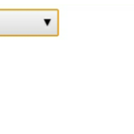
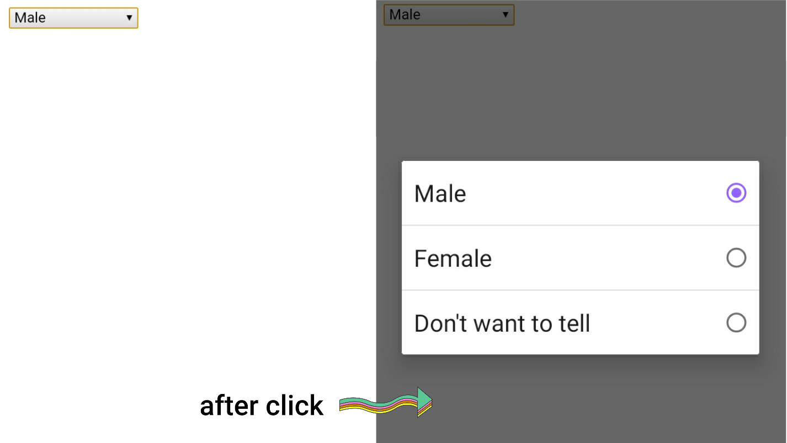

Every programmer knows more or less what the dropdown menu is. For those who don't know. The dropdown menu is an inverted triangle button like the one below which will display various other related options when clicked. To create a dropdown menu you need to use the option tag. Below is the code and the explanation of the code.

CODE:
<select>
<option>Male</option>
<option>Female</option>
<option>Don't want to tell</option>
</select>
DISCRIPTION
All you need to do to create a drop down menu is s select tag(<select></select>). Type the menu or options you want to see after clicking the dropdown menu inside the option tag(<option></option>). The number of options or menus depends on your wishes.Did you understand now? The option tag is used to create the option and the select tag is used to create the base.
OUTPUT

বাংলায়
ড্রপডাউন মেনু টা কি জিনিস প্রত্যেক প্রোগ্রামারই কম বেশি সেটা জানেন। যারা জানেন না তাদের জন্য বলছি।ড্রপডাউন মেনু টা হল নিচের চিত্রের মত একটা উল্টো ত্রিভুজাকৃতির বাটন যেটি ক্লিক করলে সে সম্পর্কিত অন্যান্য বিভিন্ন অপশন ডিসপ্লে করা হবে। ড্রপডাউন মেনু তৈরি করার জন্য আপনাকে অপশন ট্যাগ টি ইউজ করতে হবে।নিচে কোডটি এবং কোডটির ব্যাখ্যা উল্লেখ করা হলো।
কোড:
<select>
<option>Male</option>
<option>Female</option>
<option>Don't want to tell</option>
</select>
ব্যাখ্যা
ড্রপ ডাউন মেনু তৈরি করার জন্য যেটা প্রয়োজন সেটা হচ্ছে সিলেক্ট ট্যাগ। যে সকল মেনু বা অপশন আপনি ড্রপডাউন মেনুতে ক্লিক করার পর দেখতে চান সেটিকে অপসন ট্যাগ এর ভিতর টাইপ করে দিন। অপশন বা মেনুর সংখ্যা আপনার ইচ্ছার উপর নির্ভর করে। কি বোঝা গেল? অপশন ট্যাগ টি অপশন তৈরি করার জন্য এবং সিলেক্ট ট্যাগটি ভিত তৈরি করার জন্য ব্যবহার করা হয়।
আউটপুট: